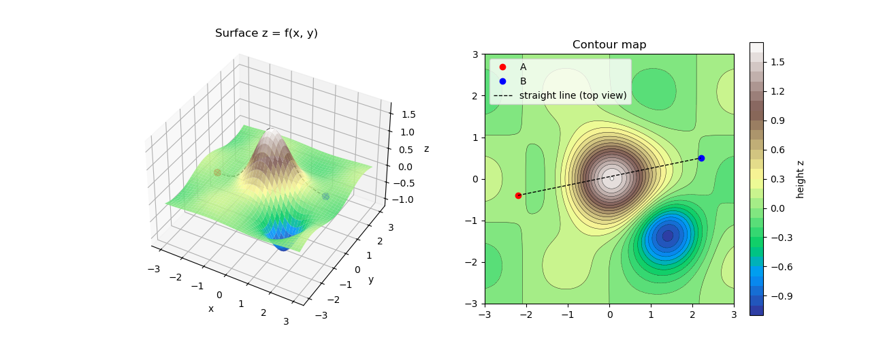
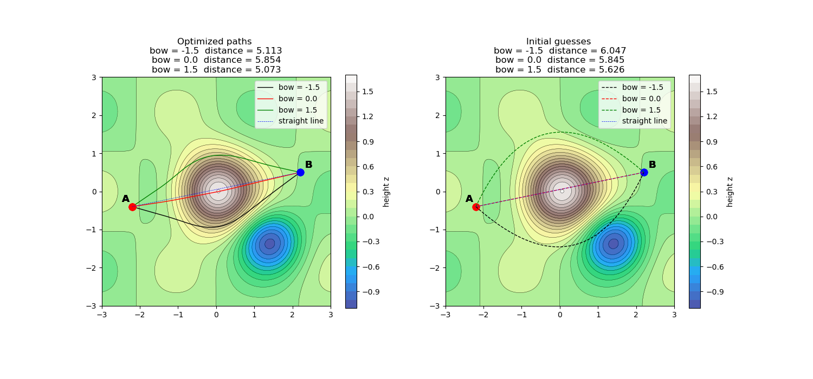
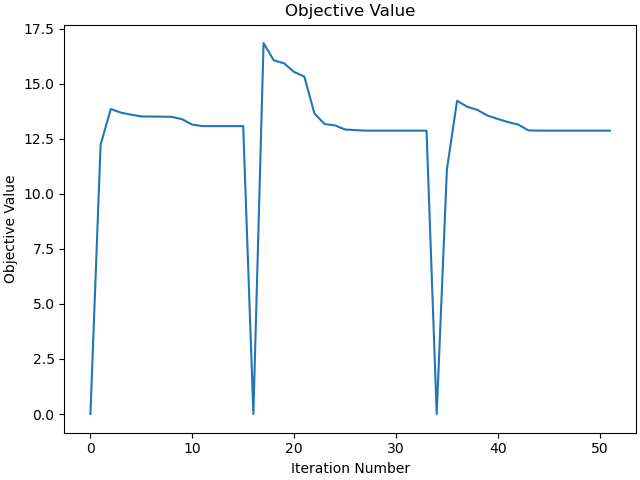
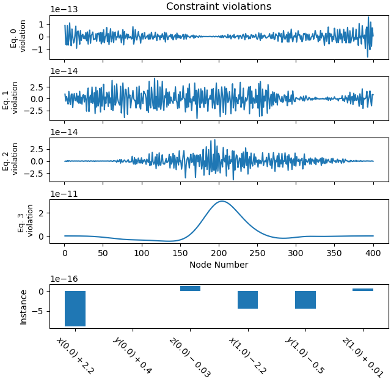
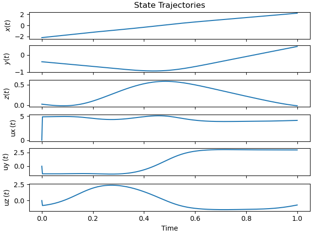
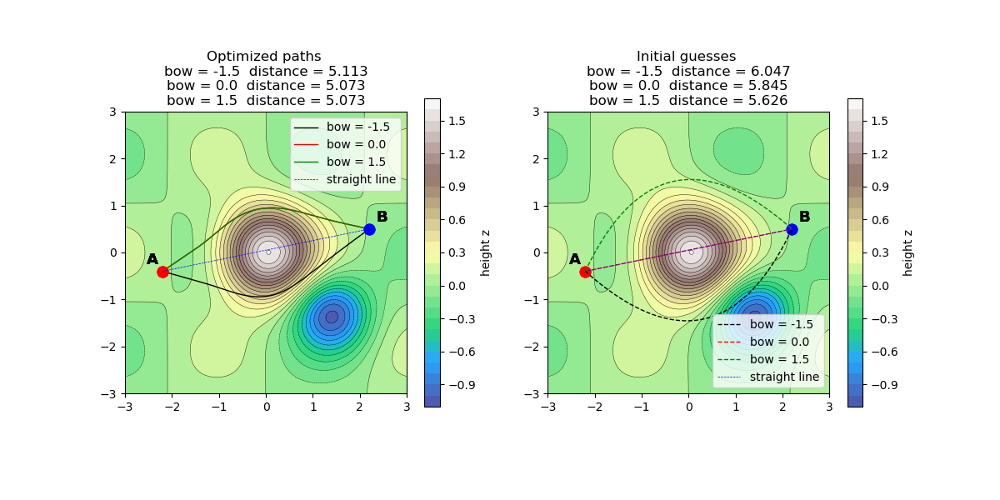
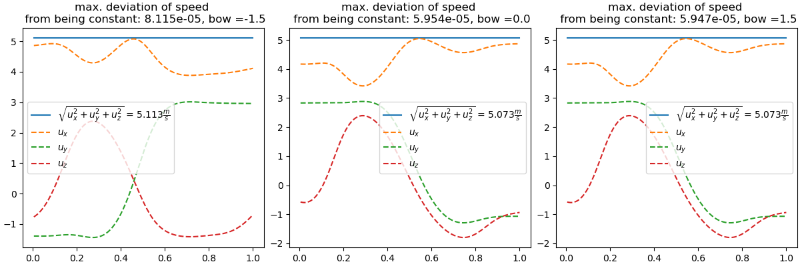

Note
Go to the end to download the full example code.
Shortest Path on a Surface¶
Objectives¶
Show how to use sympy to get the Euler equations given the Lagrange function.
Show an application of solve_bvp to solve a boundary value problem.
Show that with opty an equivalent problem formulation can improve convergence considerably.
Description¶
Given a surface defined by a function \(z = f(x, y)\) and two points \(A\) and \(B\) on the surface, the goal is to find the curve on the surface connecting \(A\) and \(B\) that has the shortest length. This problem can be approached using the calculus of variations, where the Euler equations are used to find the extremal curves.
Alternatively, opty can be used to formulate and solve an equivalent optimization problem for the shortest path.
Notes¶
The Euler equations are always linear in the highest derivatives. (A. Y. Karoui - INM Uni Stuttgart, private communication).
The Euler equations can be derived from the Lagrange function using sympy’s euler_equations function.
Initially I tried to set up opty as follows:
set the speed = v = const and have opty minimize the duration to get from \(A\) to \(B\). Naturally this must minimize the length of the path.
This approach had problems with convergence.
Then I tried to minimize the energy, \(\int_0^1 \frac{1}{2}\left(\dot x^2 + \dot y^2 + (f_x\dot x + f_y\dot y)^2\right) \, dt\), of the travel from \(A\) to \(B\) on the surface. The energy is minimized if the speed is constant along the path. With constant speed, minimizing the energy is equivalent to minimizing the length of the path. This formulation had no convergence problems. \(\longrightarrow\) describing the same minimization differently but equivalently can help convergence.
import numpy as np
import sympy as sm
import sympy.physics.mechanics as me
import matplotlib.pyplot as plt
from scipy.integrate import solve_bvp
from opty import Problem
from sympy.calculus.euler import euler_equations
Define the surface.
x, y = sm.symbols("x y", real=True)
xh, yh = sm.symbols("xh yh", real=True)
f_expr = (1.6*sm.exp(-(x**2 + y**2)/0.9)
- 1.0*sm.exp(-((x - 1.4)**2 + (y + 1.3)**2)/0.6)
+ 0.15*sm.sin(1.5*x)*sm.cos(1.5*y))
f = sm.lambdify((x, y), f_expr, cse=True)
Needed for opty below.
f_opty = f_expr.subs({x: xh, y: yh})
The two end points are chosen on opposite sides of the hill, so the straight line between them (seen from above) climbs right over the summit. Intuitively the shorter paths are around the hill.
A = np.array([-2.2, -0.4])
B = np.array([2.2, 0.5])
print(f"A({A[0]:.2f} / {A[1]:.2f} / {f(*A):.3f})")
print(f"B({B[0]:.2f} / {B[1]:.2f} / {f(*B):.3f})")
X, Y = np.meshgrid(np.linspace(-3, 3, 220), np.linspace(-3, 3, 220))
Z = f(X, Y)
fig = plt.figure(figsize=(13, 5.2))
ax = fig.add_subplot(1, 2, 1, projection="3d")
xx = np.linspace(A[0], B[0], 220)
yy = np.linspace(A[1], B[1], 220)
zz = f(xx, yy)
ax.plot(xx, yy, zz, color='black', lw=1, linestyle='--')
ax.plot_surface(X, Y, Z, cmap="terrain", linewidth=0, antialiased=True,
alpha=0.9)
ax.scatter(*A, f(*A), color="red", s=50)
ax.scatter(*B, f(*B), color="blue", s=50)
ax.set_title("Surface z = f(x, y)")
ax.view_init(38, -60)
ax.set_xlabel("x")
ax.set_ylabel("y")
ax.set_zlabel("z")
ax2 = fig.add_subplot(1, 2, 2)
cs = ax2.contourf(X, Y, Z, 30, cmap="terrain")
fig.colorbar(cs, ax=ax2, label="height z")
ax2.contour(X, Y, Z, 30, colors="k", linewidths=0.3)
ax2.plot(*A, "o", color="red", label="A")
ax2.plot(*B, "o", color="blue", label="B")
ax2.plot([A[0], B[0]], [A[1], B[1]], color='black', lw=1, linestyle='--',
label="straight line (top view)")
ax2.set_aspect("equal")
ax2.legend(loc="upper left")
_ = ax2.set_title("Contour map")

A(-2.20 / -0.40 / 0.026)
B(2.20 / 0.50 / -0.013)
Variational Approach¶
Length of a curve on the surface
The curve in space is
\(\mathbf r(t) = \big(x(t),\; y(t),\; f(x(t),y(t))\big)\)
\(|\dot{\mathbf r}|^2 = \dot x^2 + \dot y^2 + (f_x\dot x + f_y\dot y)^2 = E\,\dot x^2 + 2F\,\dot x\dot y + G\,\dot y^2\)
where
\(E = 1 + f_x^2,\qquad F = f_x f_y,\qquad G = 1+f_y^2\)
The length of the curve is
\(L[\dot x,\dot y] = \int_0^1 \sqrt{E\,\dot x^2 + 2F\,\dot x\dot y + G\,\dot y^2}\;dt , \qquad (x,y)(0)=A,\;(x,y)(1)=B\)
Instead of trying to minimize the length, it is better to minimize the energy. This is described in more detail here: https://pydy.org/pst-notebooks/examples/plot_shortest_path_on_surface.html#sphx-glr-examples-plot-shortest-path-on-surface-py
\(J[x,y] = \int_0^1 \Lambda\,dt,\qquad \Lambda(x,y,\dot x,\dot y) = \tfrac12\left(E\,\dot x^2 + 2F\,\dot x\dot y + G\,\dot y^2\right) = \tfrac12|\dot{\mathbf r}|^2\)
Euler equations.
A minimiser of \(J\) must satisfy, for each coordinate \(q \in \{x, y\}\),
\(\frac{d}{dt}\frac{\partial \Lambda}{\partial \dot q} - \frac{\partial \Lambda}{\partial q} = 0\), \(q \in \{x, y\}\)
t = me.dynamicsymbols._t
x, y, ux, uy = me.dynamicsymbols("x y ux uy")
ff = f_opty.subs({xh: x, yh: y})
Lagrange function for the energy of the curve on the surface.
Lagrange = 1/2 * ((x.diff(t))**2 + (y.diff(t))**2 + ff.diff(t)**2)
Euler equations for the given Lagrange function.
euler = euler_equations(Lagrange, [x, y], t)
Solve for \(\ddot x, \ddot y\). The Euler equations are linear in \(\ddot x\) and \(\ddot y\).
AA, bb = sm.linear_eq_to_matrix(euler, [x.diff(t, 2), y.diff(t, 2)])
xdd, ydd = AA.LUsolve(bb)
xdd = xdd.subs({x.diff(t): ux, y.diff(t): uy})
ydd = ydd.subs({x.diff(t): ux, y.diff(t): uy})
Get the right-hand side of the first-order system for the geodesic equations.
rhs = sm.Matrix([ux, uy, xdd, ydd])
rhs_lam = sm.lambdify([x, y, ux, uy], rhs, cse=True)
def geodesic_rhs(t, u):
return rhs_lam(*u).squeeze()
Define the boundary residuals for solve_bvp.
def boundary_conditions(ua, ub):
# residuals that must vanish: position at t=0 is A, at t=1 is B
return np.array([ua[0] - A[0], ua[1] - A[1], ub[0] - B[0], ub[1] - B[1]])
Needed to calculate the length of a curve on the surface z = f(x, y)
def curve_length(sol, n=4000):
# length in 3D of the curve described by a solve_bvp solution
tt = np.linspace(0, 1, n)
X, Y = sol.sol(tt)[:2]
P = np.vstack([X, Y, f(X, Y)])
return np.sum(np.linalg.norm(np.diff(P, axis=1), axis=0))
Define the initial guess.
num_nodes = 401
t_mesh = np.linspace(0, 1, num_nodes)
def initial_guess(bow=0.0):
# straight line A->B, optionally bent sideways by 'bow'
# (a parabola-shaped bulge)
d = B - A
# unit vector perpendicular to AB
nrm = np.array([-d[1], d[0]]) / np.linalg.norm(d)
shape, dshape = 4*t_mesh*(1 - t_mesh), 4*(1 - 2*t_mesh)
# XY gives a straight line from A to B with a sideways bulge
# defined by 'bow'. Straight line corresponds to bow=0
XY = A[:, None] + d[:, None]*t_mesh + bow*nrm[:, None]*shape
# V = derivative of XY with respect to t
V = d[:, None] + bow*nrm[:, None]*dshape
return np.vstack([XY, V])
Solving the boundary value problem with solve_bvp
solve_bvp needs a first-order system.
State vector
\(\mathbf u = (x,\; y,\; v_x,\; v_y),\qquad v_x = \dot x,\; v_y=\dot y\)
and with four boundary conditions:
\(x(0)=A[0], \; y(0)=A[1],\; x(1)=B[0],\; y(1)=B[1]\)
bow_list = [-1.5, 0.0, 1.5]
solution_list = []
initial_guess_list = []
initial_plot = []
for b in bow_list:
XY = initial_guess(b)
XX, YY = XY[0, :], XY[1, :]
initial_guess_list.append((XX, YY))
initial_plot.append((XX, YY))
sol = solve_bvp(geodesic_rhs, boundary_conditions, t_mesh,
initial_guess(b), tol=1e-6, max_nodes=20000)
if not sol.success:
raise RuntimeError(f"Failed to solve BVP for bow={b}")
solution_list.append(sol)
For initial guess = straight line (bow = 0.0), it seems that solve_bvp has found a maximum. (The variational approach will only find local stationary points.)
colors = ["tab:green", "tab:orange", "tab:purple", "tab:brown",
"tab:cyan", "tab:olive"]
tt = np.linspace(0, 1, num_nodes)
fig, ax = plt.subplots(1, 2, figsize=(15, 7))
for axi in ax:
axi.set_aspect('equal')
cs = axi.contourf(X, Y, Z, 30, cmap="terrain", alpha=0.85)
axi.contour(X, Y, Z, 30, colors="k", linewidths=0.3)
fig.colorbar(cs, ax=axi, label="height z", shrink=0.8)
distanz_list = []
farben = ['black', 'red', 'green']
labels = [f'bow = {bow}' for bow in bow_list]
for i, solution in enumerate(solution_list):
sol_vals = solution.sol(tt)[:2]
ax[0].plot(sol_vals[0], sol_vals[1], lw=1, color=farben[i],
label=labels[i])
ax[0].plot(*A, "o", color="red", ms=9)
ax[0].annotate("A", A, xytext=(-14, 6),
textcoords="offset points", fontsize=13, weight="bold")
for axi in ax:
axi.plot(*A, "o", color="red", ms=9)
axi.annotate("A", A, xytext=(-14, 6),
textcoords="offset points", fontsize=13, weight="bold")
for axi in ax:
axi.plot(*B, "o", color="blue", ms=9)
axi.annotate("B", B, xytext=(6, 6),
textcoords="offset points", fontsize=13, weight="bold")
punkte = np.array([(a, b, c) for a, b, c in zip(
sol_vals[0, :], sol_vals[1, :], f(sol_vals[0, :], sol_vals[1, :]))])
distanz = np.sum([np.linalg.norm(punkte[i+1] - punkte[i])
for i in range(num_nodes-1)])
distanz_list.append(distanz)
msg_initial = f"Optimized paths \n" + "\n".join(
[f"bow = {i} distance = {j:.3f}" for i, j in zip(bow_list,
distanz_list)])
ax[0].set_title(msg_initial)
XX = np.linspace(A[0], B[0], num_nodes)
YY = np.linspace(A[1], B[1], num_nodes)
ax[0].plot(XX, YY, lw=0.5, color="blue", linestyle="--", label="straight line")
ax[0].legend()
i = -1
distanz_list_initial = []
for X_guess, Y_guess in initial_plot:
punkte = np.array([(a, b, c) for a, b, c in zip(X_guess, Y_guess,
f(X_guess, Y_guess))])
i += 1
ax[1].plot(X_guess, Y_guess, lw=1, color=farben[i], linestyle="--",
label=f'bow = {bow_list[i]}')
distanz = np.sum([np.linalg.norm(punkte[j+1] - punkte[j])
for j in range(num_nodes-1)])
distanz_list_initial.append(distanz)
msg_initial = f"Initial guesses \n" + "\n".join(
[f"bow = {i} distance = {j:.3f}" for i, j in zip(bow_list,
distanz_list_initial)])
ax[1].set_title(msg_initial)
ax[1].plot(XX, YY, lw=0.5, color="blue", linestyle="--", label="straight line")
_ = ax[1].legend()

Save the distance values as a numpy array for comparison with opty’s results.
distance_var = np.array(distanz_list)
opty¶
Equations of motion.
N = me.ReferenceFrame('N')
O, P = me.Point('O'), me.Point('P')
O.set_vel(N, 0)
t = me.dynamicsymbols._t
x, y, z, ux, uy, uz = me.dynamicsymbols('x y z ux uy uz')
f_opty_h = f_opty.subs({xh: x, yh: y})
def hill(x, y):
return f_opty_h
eom = sm.Matrix([
x.diff(t) - ux,
y.diff(t) - uy,
z.diff(t) - uz,
z - hill(x, y),
])
hill_lam = sm.lambdify((x, y), hill(x, y))
Create an instance of Problem.
state_symbols = [x, y, z, ux, uy, uz]
t0, tf = 0.0, 1.0
interval_value = (tf - t0) / (num_nodes - 1)
instance_constraints = [
x.func(t0) - A[0],
y.func(t0) - A[1],
z.func(t0) - hill_lam(A[0], A[1]),
x.func(tf) - B[0],
y.func(tf) - B[1],
z.func(tf) - hill_lam(B[0], B[1]),
]
def obj(free):
# Minimize the (kinetic) energy along the curve
speed = free[3*num_nodes: 6*num_nodes]
energie = 0.5 * np.sum(speed**2)
return energie * interval_value
def obj_grad(free):
grad = np.zeros_like(free)
speed = free[3*num_nodes: 6*num_nodes]
grad[3*num_nodes: 6*num_nodes] = speed * interval_value
return grad
Set up Problem.
prob = Problem(
obj,
obj_grad,
eom,
state_symbols,
num_nodes,
interval_value,
time_symbol=t,
instance_constraints=instance_constraints,
)
Solve the problem.
initial_guess_list = []
initial_plot = []
for bow in bow_list:
X_guess = initial_guess(bow=bow)[0]
Y_guess = initial_guess(bow=bow)[1]
initial_plot.append((X_guess, Y_guess))
initial_guess_list.append(
np.concatenate([X_guess, Y_guess, hill_lam(X_guess, Y_guess),
np.zeros_like(X_guess), np.zeros_like(X_guess),
np.zeros_like(X_guess)]))
solution_list = []
for initial_guess in initial_guess_list:
solution, info = prob.solve(initial_guess)
print(info['status_msg'])
solution_list.append(solution)
b'Algorithm terminated successfully at a locally optimal point, satisfying the convergence tolerances (can be specified by options).'
b'Algorithm terminated successfully at a locally optimal point, satisfying the convergence tolerances (can be specified by options).'
b'Algorithm terminated successfully at a locally optimal point, satisfying the convergence tolerances (can be specified by options).'
Plot the objective value of the last solution only.
_ = prob.plot_objective_value()

Plot the constraint violations, for the first solution only.
_ = prob.plot_constraint_violations(solution_list[0], subplots=True)

Plot the trajectories of the first solution.
_ = prob.plot_trajectories(solution_list[0])

Plot the results. They are very close, except for bow = 0, where the variational solution finds a maximum, but opty find a minimum.
colors = ["tab:green", "tab:orange", "tab:purple", "tab:brown",
"tab:cyan", "tab:olive"]*5
fig, ax = plt.subplots(1, 2, figsize=(12, 6))
for axi in ax:
axi.set_aspect('equal')
cs = axi.contourf(X, Y, Z, 30, cmap="terrain", alpha=0.85)
axi.contour(X, Y, Z, 30, colors="k", linewidths=0.3)
fig.colorbar(cs, ax=axi, label="height z", shrink=0.8)
distanz_list = []
farben = ['black', 'red', 'green']
labels = [f'bow = {bow}' for bow in bow_list]
for i, solution in enumerate(solution_list):
sol_vals, *_ = prob.parse_free(solution)
ax[0].plot(sol_vals[0], sol_vals[1], lw=1, color=farben[i],
label=labels[i])
ax[0].plot(*A, "o", color="red", ms=9)
ax[0].annotate("A", A, xytext=(-14, 6),
textcoords="offset points", fontsize=13, weight="bold")
for axi in ax:
axi.plot(*A, "o", color="red", ms=9)
axi.annotate("A", A, xytext=(-14, 6),
textcoords="offset points", fontsize=13, weight="bold")
for axi in ax:
axi.plot(*B, "o", color="blue", ms=9)
axi.annotate("B", B, xytext=(6, 6),
textcoords="offset points", fontsize=13, weight="bold")
punkte = np.array([(a, b, c) for a, b, c in zip(sol_vals[0, :],
sol_vals[1, :],
sol_vals[2, :])])
distanz = np.sum([np.linalg.norm(punkte[i+1] - punkte[i])
for i in range(num_nodes-1)])
distanz_list.append(distanz)
msg_initial = f"Optimized paths \n" + "\n".join(
[f"bow = {i} distance = {j:.3f}" for i, j in zip(bow_list,
distanz_list)])
ax[0].set_title(msg_initial)
XX = np.linspace(A[0], B[0], num_nodes)
YY = np.linspace(A[1], B[1], num_nodes)
ax[0].plot(XX, YY, lw=0.5, color="blue", linestyle="--", label="straight line")
ax[0].legend()
i = -1
distanz_list_initial = []
for X_guess, Y_guess in initial_plot:
punkte = np.array([(a, b, c) for a, b, c in zip(X_guess, Y_guess,
hill_lam(X_guess,
Y_guess))])
i += 1
ax[1].plot(X_guess, Y_guess, lw=1, color=farben[i], linestyle="--",
label=f'bow = {bow_list[i]}')
distanz = np.sum([np.linalg.norm(punkte[j+1] - punkte[j])
for j in range(num_nodes-1)])
distanz_list_initial.append(distanz)
msg_initial = f"Initial guesses \n" + "\n".join(
[f"bow = {i} distance = {j:.3f}" for i, j in zip(bow_list,
distanz_list_initial)])
ax[1].set_title(msg_initial)
_ = ax[1].legend()
ax[1].plot(XX, YY, lw=0.5, color="blue", linestyle="--", label="straight line")
_ = ax[1].legend()
for i in range(len(bow_list)):
print(f"For bow = {bow_list[i]}: Difference in length between "
"variational and opty = "
f"{distance_var[i] - distanz_list[i]:.3e}")

For bow = -1.5: Difference in length between variational and opty = 2.469e-10
For bow = 0.0: Difference in length between variational and opty = 7.807e-01
For bow = 1.5: Difference in length between variational and opty = 2.107e-10
Check the constancy of speed along the optimized paths.
fig, ax = plt.subplots(1, 3, figsize=(12, 4), layout='constrained')
for i, solution in enumerate(solution_list):
sol_vals, *_ = prob.parse_free(solution)
time = prob.time_vector(solution)
ux = sol_vals[3, 2:]
uy = sol_vals[4, 2:]
uz = sol_vals[5, 2:]
speed = np.linalg.norm(np.vstack((ux, uy, uz)), axis=0)
delta_speed = np.max(speed) - np.min(speed)
ax[i].plot(time[2:], speed, label=(r'$\sqrt{u_x^2 + u_y^2 + u_z^2}$ = ' +
f'{np.mean(speed):.3f}' +
r'$\frac{m}{s}$'))
ax[i].plot(time[2:], ux, label='$u_x$', linestyle='--')
ax[i].plot(time[2:], uy, label='$u_y$', linestyle='--')
ax[i].plot(time[2:], uz, label='$u_z$', linestyle='--')
ax[i].set_title(f"max. deviation of speed \n from being constant: "
f"{delta_speed:.3e}, bow ={bow_list[i]}")
ax[i].legend()

Total running time of the script: (0 minutes 11.241 seconds)